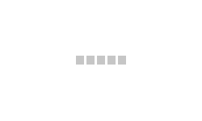
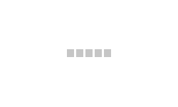

Vue.js 2.0^ powerful but simple pagination component which is fully customizable and easy to use.
Installation
npm install flex-pagination
Basic example
Flex pagination requires [:pagination=""] property which must be of type object and have 2 child properties.
[page] type (int) which is current active page;
[total] type (int) which is total amount of pages;
[page] type (int) which is current active page;
[total] type (int) which is total amount of pages;
import FlexPagination from 'flex-pagination';
<flex-pagination :pagination="pagination"></flex-pagination>
pagination: {
page: {{ example1.pagination.page }},
total: {{ totalPages }}
}
page: {{ example1.pagination.page }},
total: {{ totalPages }}
}
Page {{ example1.pagination.page }}
RESULT:
Ranges
Optional property [:range=""] is defining how many page are shown around current
page which are set to 5 by default.
[before] type (int) number of pages before current;
[after] type (int) number of pages after current;
NOTE: Ranges was pulled out of configuration because of its frequent usage.
[before] type (int) number of pages before current;
[after] type (int) number of pages after current;
NOTE: Ranges was pulled out of configuration because of its frequent usage.
<flex-pagination
:pagination="pagination"
:range="range"></flex-pagination>
range: {
before: {{ example2.range.before }},
after: {{ example2.range.after }}
}
before: {{ example2.range.before }},
after: {{ example2.range.after }}
}
Page {{ example2.pagination.page }}
RESULT: 3 pages are shown before the current page and 0 after.
Configuration
[:config=""] property is keeping other non required flex-pagination configuration properties.
[show] type (object) defines which visual elements must be hidden.
[first] type (boolean) default true;
[prev] type (boolean) default true;
[next] type (boolean) default true;
[last] type (boolean) default true;
[event] type (string) default 'flexp:page';
[show] type (object) defines which visual elements must be hidden.
[first] type (boolean) default true;
[prev] type (boolean) default true;
[next] type (boolean) default true;
[last] type (boolean) default true;
[event] type (string) default 'flexp:page';
Hide elements
[show] property of the [:config="] object defines which visual elements must be hide or show.
[first], [prev], [next], [last] type (boolean) default True;
[first], [prev], [next], [last] type (boolean) default True;
<flex-pagination
:pagination="pagination"
:config="config"></flex-pagination>
config: {
show: {
first: {{ example3.config.show.first }},
last: {{ example3.config.show.last }},
next: {{ example3.config.show.next }},
prev: {{ example3.config.show.prev }}
}
}
show: {
first: {{ example3.config.show.first }},
last: {{ example3.config.show.last }},
next: {{ example3.config.show.next }},
prev: {{ example3.config.show.prev }}
}
}
Page {{ example3.pagination.page }}
RESULT: first, previous and last buttons were hidden.
Events
Each time you navigate on pagination an event is emitted.
By default event name is 'flexp:page'. You can define a custom event name using config
[event] property.
[event] type (string) default 'flexp:page';
NOTE: The event handler will receive selected page number in the first parameter.
[event] type (string) default 'flexp:page';
NOTE: The event handler will receive selected page number in the first parameter.
<flex-pagination
:pagination="pagination"
:v-on:my:custom:event="myEventHandler"
:config="config">...
data: {
currentPageContent: '',
pagination: {
page: {{ this.example4.pagination.page }},
// NOTE: total pages will be updated after "request" result.
// For demonstration purpose, a random number will be taken in between 40 and 50.
total: {{ this.example4.pagination.total }}
},
config: {
event: 'my:custom:event'
},
}
methods: {
myEventHandler(pageNumber) {
let self = this;
self.makeRequest(pageNumber).then(function(response){
self.currentPageContent = response.data;
});
}
}
currentPageContent: '',
pagination: {
page: {{ this.example4.pagination.page }},
// NOTE: total pages will be updated after "request" result.
// For demonstration purpose, a random number will be taken in between 40 and 50.
total: {{ this.example4.pagination.total }}
},
config: {
event: 'my:custom:event'
},
}
methods: {
myEventHandler(pageNumber) {
let self = this;
self.makeRequest(pageNumber).then(function(response){
self.currentPageContent = response.data;
});
}
}
This is dummy loader to emulate "request" timeout ...


RESULT:
Customization
Flex pagination is fully customizable, you can replace pagination elements content and/or rewrite basic css.
Templates
Content of any element in the flex pagination can be replaced using Vue.js slots features. Each slot
receive [page] property that can be used in the templates.
[flexp:first] slot name for pagination first;
[flexp:previous] slot name for pagination previous;
[flexp:page] slot name for pagination current page;
[flexp:next] slot name for pagination next;
[flexp:last] slot name for pagination last;
[flexp:range:before] slot name for elements of the range before current page;
[flexp:range:after] slot name for elements of the range after current page;
[flexp:first] slot name for pagination first;
[flexp:previous] slot name for pagination previous;
[flexp:page] slot name for pagination current page;
[flexp:next] slot name for pagination next;
[flexp:last] slot name for pagination last;
[flexp:range:before] slot name for elements of the range before current page;
[flexp:range:after] slot name for elements of the range after current page;
<flex-pagination :pagination="pagination">
<template v-slot:flexp:first>
<template v-slot:flexp:previous="prev">
<template v-slot:flexp:range:before="before">
<template v-slot:flexp:page="current">
</flex-pagination>
<template v-slot:flexp:first>
<svg viewBox="0 0 70 120"><path d="M70 0, 0 50, 70 100, 70 70, 45 50, 70 30, Z"/></svg>
</template>
<template v-slot:flexp:previous="prev">
Back to page:
{{ prev.page }}
</template><template v-slot:flexp:range:before="before">
<span style="color: red;">
{{ before.page }}
</span>
</template>{{ before.page }}
</span>
<template v-slot:flexp:page="current">
<span style="color: green; font-weight: bold;">
{{ current.page }}
</span>
</template>{{ current.page }}
</span>
</flex-pagination>
Page {{ example5.pagination.page }}
RESULT:
Styles
You can rewrite native classes directly or by adding new class to the flex pagination component.
The class names follows the same pattern as other flex pagination features.
<flex-pagination
:pagination="pagination"
class="my-class"></flex-pagination>
.my-class .flexp-btn {
border: 2px solid grey;
font-weight: bold;
}
.my-class .flexp-btn:hover {
border-color: red;
color: red;
}
.my-class .flexp-first,
.my-class .flexp-last {
border-color: blue;
color: blue;
}
.my-class .flexp-previous,
.my-class .flexp-next {
border-color: orangered;
color: orangered;
}
.my-class .flexp-range-before,
.my-class .flexp-range-after {
border-color: green;
color: green;
}
.my-class .flexp-page.active {
border-color: white;
background: white;
color: black;
}
Page {{ example1.pagination.page }}
RESULT: